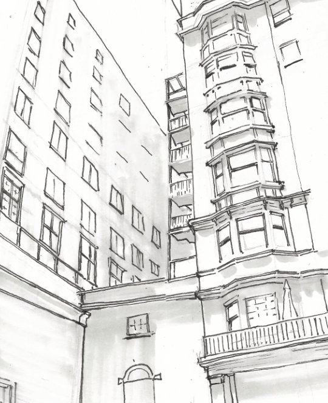

About
I'm Izrahiah Immanuel, an architecture student at the Georgia Institute of Technology (2023–2026). My studio work spans urban agriculture, coastal community architecture, multifamily housing, and small public structures, with a recurring focus on sustainability, material honesty, and how a building shapes the way people move through and interact with a space.
Across projects like the Vertical Farm and the Hastings Gantt Coastal Center, I've explored how design can respond to real constraints — dense urban sites, historic context, and climate — while still creating spaces built for community, education, and everyday life.
I'm always interested in new collaborations, critique, and conversation. Feel free to connect with me on LinkedIn.
Connect on LinkedIn →